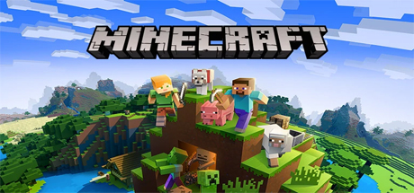

Open World Games
O
pen world games allow the player to fully explore the world, without a clear objective or purpose. The constant joy of finding something new or cool causes the player to explore more in hopes of finding something else. Most of these games don't explain how to play it, making it challenging to for the inexperienced. When the player gets to a certain point of these games, they will develop the skills or items necassary to do anything in the game, like my maybe defeating a boss or building a structure.
My Recommendations
Elden Ring

Elden Ring is a game that puts the player in a magical world called The Lands Between. The game came out in 2022. The games premise is to kill bosses, there is a story to the game but the player has to explore the world to find it, the game doesn't say where to go. The game is all about combat in which the player has to find better equipment including weapons, armor and even spells. Every boss is unique, not one fight is the same, this means the player has to adapt to create a working strategy to defeat every boss.
The player can also customize their characters look, in which players create their personalized characters. The player can also choose between multiple classes that changes the stats of their character, this allows for players to create builds that go with their play style. These builds include Astrologers, Bandits, Confessors, Heroes, Prisoners, Prophets and Samurais.
Minecraft

Minecraft was released in 2011, it has recieved many updates since then and is still a popluar game to this day. The game can be played alone or with multiple freinds in a server. The game has no clear objective, the player has to survive against different monsters that come out during the night. The players world is pretty much infinite and no world is the same as another players' world. The player can build anything they want, homes, monuments, art and even allows players to create complex machines with a material that works as electricity.
The player has to gather all the resources they will use, this includes mining for ores, cutting down trees and hunting. The player can create a portal to another dimension which allows for new resources to be available. Minecraft has many well recognized boss fights including, The Ender Dragon and The Wither and more recently, The Warden; a mob that can only be found deep underground and is extremely strong with one weakness, it's blind. Minecraft continues to grow and has mantained a constant pace of updates to keep bringing old players back to the game.